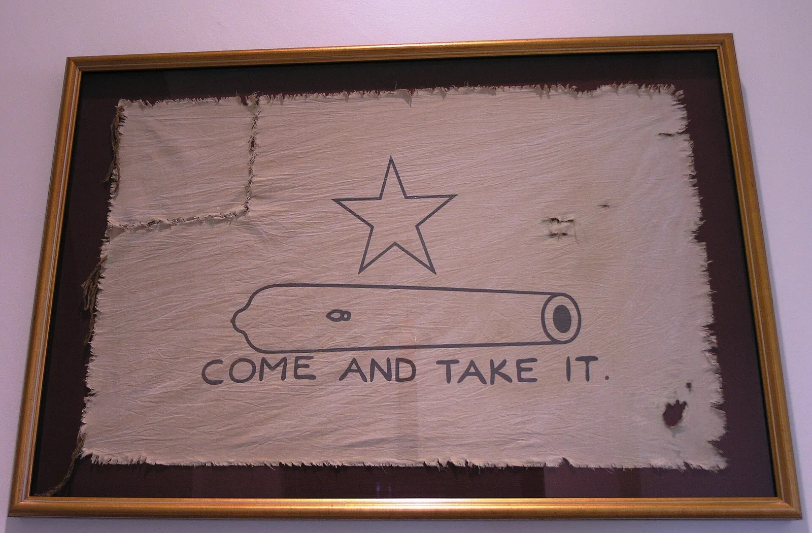
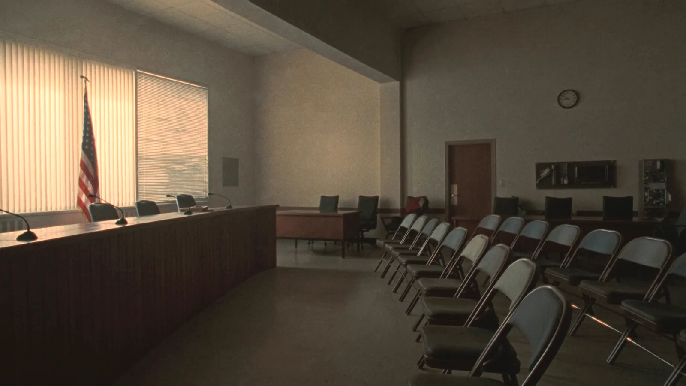

Texas News
Every story, newest first

Come and Take It: The Cannon, the Flag and the Line Texans Still Draw
In 1835 the settlers of Gonzales were told to hand over a small cannon. They answered with a homemade flag and three words. Why Come and Take It still means something in Texas.
October 27, 2026 · 4 min read
190 Years Free: What March 2, 1836 Still Asks of Every Texan
This year marks 190 years since Texas declared its independence at Washington-on-the-Brazos. The Alamo, San Jacinto, and what that sacrifice asks of Texans today.
October 27, 2026 · 5 min read
Honor the Texas Flag: The Pledge Texas Students Say Every Morning
Texas public school students say two pledges every school day: one to the United States and one to Texas. What the Texas pledge says, where it came from, and what the Lone Star flag stands for.
October 27, 2026 · 4 min read
District 125 Is Open. The Landslide That Wasn't.
Ray Lopez is not running again, so House District 125 has no incumbent for the first time in years. The 80 percent everyone reported came from the smallest electorate of the cycle — and November is a third electorate…
September 12, 2026 · 4 min read

Texas Just Rewrote High School History. Nothing Reaches a Classroom Until 2030.
The State Board of Education rewrote four high school courses. The standards do not reach a classroom until the 2030-31 school year — after two more board elections.
September 3, 2026 · 5 min read
10 Red Flags Your Child's School Renamed CRT Instead of Removing It
Texas banned Critical Race Theory in 2021. The framework did not leave — it changed vocabulary. Ten warning signs every Texas parent can check at their own district.
July 25, 2026 · 7 min read

Why I Almost Gave Up on the Texas Legislature This Year
A conservative's honest account of watching bills pass and nothing change — and why outcome-based accountability beats another press release.
July 25, 2026 · 5 min read
Union Money, a Transit Mess, and a War on School Choice: Why Adrian Reyna Is Wrong for District 125
A teachers'-union executive lifted by the AFL-CIO machine, a VIA Transit board member presiding over a near-$800 million buildout and eminent-domain land seizures, an opponent of school choice in his own words — and, by…
May 27, 2026 · 6 min read

Texas Tech System Eliminates All Gender Identity Programs Across Five Universities
In a landmark April 2026 decision, Chancellor Brandon Creighton ordered the full phase-out of all academic programs "centered on" Sexual Orientation and Gender Identity across the system's five universities — freezing…
April 10, 2026 · 8 min read

CRT Still Being Taught Under Different Names in Texas Schools
Despite Senate Bill 3 becoming law in 2021 to ban critical race theory concepts, the Texas Public Policy Foundation reports that CRT principles continue to be woven into curricula under rebranded terminology. The law's…
March 22, 2026 · 6 min read

Exposing ESG: Court Strikes Down Texas Anti-Woke Investment Law, But the Fight Isn't Over
A federal judge ruled that Texas' Energy Discrimination Elimination Act — which required state agencies to divest from companies boycotting fossil fuels — violated the First Amendment. The 2021 law had blacklisted firms…
February 8, 2026 · 6 min read

Texas Launches DEI Investigation Portal — Anyone Can Now File University Complaints
On January 9, 2026, the Texas Office of the Ombudsman launched a public complaint portal allowing any Texan to report state university violations of Senate Bill 17 — the 2023 law that banned diversity, equity, and…
January 12, 2026 · 7 min read

Houston Parents Win Lawsuit Over School's Secret Gender Transition of Daughter
Terry and Sarah Osborn sued Houston ISD's Bellaire High School after discovering that more than six school employees referred to their daughter using a masculine name and male pronouns for two years — against the…
December 15, 2025 · 5 min read

Texas A&M Fires Professor, Forces Out President After "Gender Unicorn" Classroom Recording
In September 2025, a Texas A&M student secretly recorded a children's literature class in which instructor Melissa McCoul presented a "gender unicorn" graphic and discussed content recognizing more than two genders.…
September 20, 2025 · 8 min read

Texas Sovereignty Act Passes House 86-41 — State Could Nullify Unconstitutional Federal Actions
House Bill 796 passed the Texas House on May 6, 2025, creating the Joint Legislative Committee on Constitutional Enforcement — a 12-member bipartisan panel empowered to review federal laws, executive orders, agency…
May 8, 2025 · 7 min read